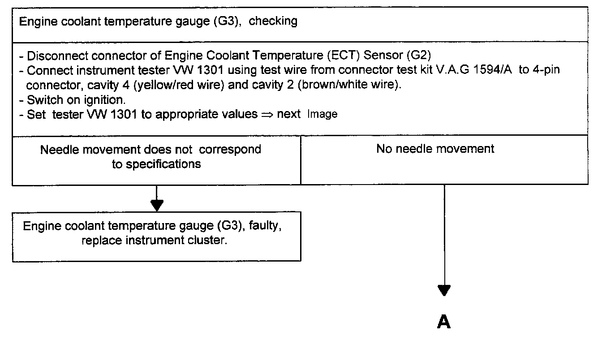
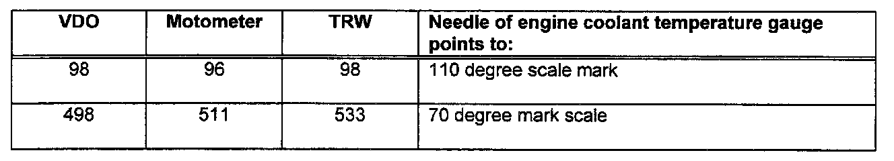

Checking Engine Coolant Temperature Gauge (G3)


Tools required:
- Instrument tester VW 1301
- Connector test kit V.A.G 1594/A
- Test box V.A.G 1598 with adapter V.A.G 1598/8
- Digital multimeter Fluke 83 (US 1119)
- Applicable wiring diagram
CAUTION: DO NOT damage, enlarge or bend connector terminals or cavities by forcing probes into them when performing electrical checks. Use connector test kit VW 1594 to make the necessary electrical connections.
NOTE: At coolant temperatures between 75 and 107 °C (167 and 225 °F), the needle on the engine coolant temperature gauge (G3) always remains on the 90 °C (194 °F) mark. At the beginning of 1995 model year; inserts without this function were installed. On these the actual coolant temperature is indicated.
Test conditions:
Fuses S 16 and S 21 on fuse/relay panel OK
NOTE:
- The Engine coolant temperature gauge (G3) must be checked with different setting values depending on the manufacturer of the gauge
- The manufacturer is listed on the back side of the instrument cluster.
Tester VW 1301, setting values:

If the readings are not within specifications, the Engine Coolant Temperature (ECT) Sensor (G2) is faulty. Permissible deviation: One needle width